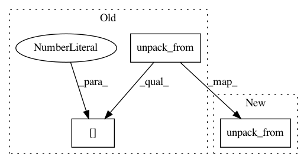

b9efa820314c6c3dd3f1a1e4f8c7adc683340913,datasketch/hyperloglog.py,HyperLogLog,__setstate__,#HyperLogLog#Any#,222
Before Change
self.__init__(p=p)
offset = size
for i in range(self.m):
self.reg[i] = struct.unpack_from("B", buffer(buf), offset)[0]
offset += size
class HyperLogLogPlusPlus(HyperLogLog):
After Change
self.reg = np.array(struct.unpack_from("%dB" % self.m,
buf, offset), dtype=np.int8)
except TypeError:
self.reg = np.array(struct.unpack_from("%dB" % self.m,
buffer(buf), offset), dtype=np.int8)
class HyperLogLogPlusPlus(HyperLogLog):
In pattern: SUPERPATTERN
Frequency: 3
Non-data size: 3
Instances
Project Name: ekzhu/datasketch
Commit Name: b9efa820314c6c3dd3f1a1e4f8c7adc683340913
Time: 2016-01-19
Author: erkangzhu@gmail.com
File Name: datasketch/hyperloglog.py
Class Name: HyperLogLog
Method Name: __setstate__
Project Name: ekzhu/datasketch
Commit Name: b9efa820314c6c3dd3f1a1e4f8c7adc683340913
Time: 2016-01-19
Author: erkangzhu@gmail.com
File Name: datasketch/hyperloglog.py
Class Name: HyperLogLog
Method Name: deserialize
Project Name: SpiNNakerManchester/sPyNNaker
Commit Name: 35aae1ccde33ef809feacf2b2e8b89b6394dc702
Time: 2019-09-11
Author: donal.k.fellows@manchester.ac.uk
File Name: spynnaker/pyNN/models/common/eieio_spike_recorder.py
Class Name: EIEIOSpikeRecorder
Method Name: _process_spike_data